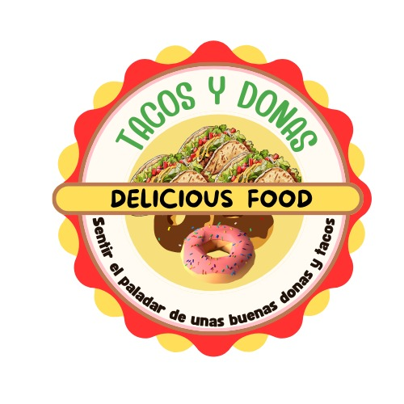

El TacoDona Mix

Bienvenidos a El TacoDona Mix, donde la tradición se
encuentra con la innovación para ofrecerte dos de los placeres gastronómicos más irresistibles: donas frescas y tacos auténticos.
En nuestra empresa, combinamos lo mejor de ambos mundos, fusionando sabores clásicos con toques modernos para
crear una experiencia única.
Nos enorgullecemos de utilizar ingredientes de alta calidad, frescos y locales, para elaborar cada producto. Ya sea que tengas
antojo de una dona glaseada esponjosa o un taco lleno de sabor y textura, nos esforzamos por ofrecerte lo mejor en cada bocado.
Creemos que tanto el postre como la comida rápida pueden ser deliciosos, asequibles y un verdadero placer para todos.
Desde nuestros rellenos creativos en las donas hasta nuestras salsas caseras para los tacos, cada detalle está pensado para sorprender
a tu paladar.El TacoDona Mix es más que un lugar para comer, es un destino para disfrutar, compartir y celebrar
los sabores que amas.
¡Ven a visitarnos y descubre la fusión perfecta entre lo dulce y lo salado!
Sobre Nosotros
En El TacoDona Mix, combinamos lo mejor de dos mundos: ¡deliciosos tacos y exquisitas donas! Ubicados en el corazón del Insibo Santo Tomás, nos enorgullecemos de ofrecer a nuestra comunidad sabores únicos y experiencias gastronómicas que satisfacen tanto antojos salados como dulces.
Desde nuestros tacos sabrosos hasta nuestras donas recién horneadas, utilizamos ingredientes frescos y recetas artesanales que reflejan nuestra pasión por la comida.
Ya sea que busques un desayuno rápido, un almuerzo delicioso o un postre irresistible,
siempre encontrarás algo que te haga volver por más.
Nuestra misión es simple: brindar una experiencia deliciosa y acogedora para todos nuestros clientes. Creemos en la comida hecha con amor y atención a los detalles, y en cada taco y dona puedes sentir esa dedicación.
Gracias por ser parte de nuestra historia. ¡Esperamos seguir endulzando y sazonando tus días por mucho tiempo más!
Contacto
Instagram:https://www.instagram.com/minidonasytacos. Facebook:https://www.facebook.com/share/18yQentBxX/?mibextid=qi2Omg Correo:tacosyminidonas@gmail.com